Помогаю находить причины повторяющихся сценариев и найти выход из внутреннего тупика через регрессию и метод «Код жизни».
Записаться на консультациюЕсли хотя бы два пункта — про тебя, мы можем разобраться.
Снова оказываешься не в тех отношениях — и не понимаешь почему
Откладываешь важные решения, хотя давно пора сделать шаг
Чувствуешь тревогу без видимой причины — просто фоном
Много думаешь, анализируешь — но понимания больше не становится
Ходишь по кругу в одних и тех же сценариях — в работе, деньгах, отношениях
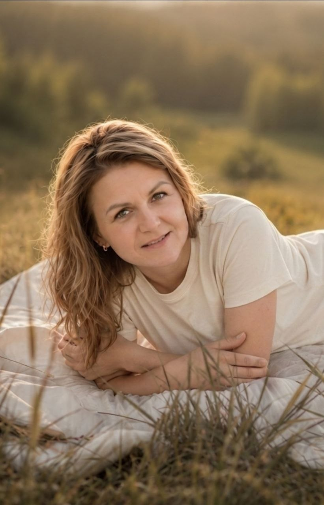
Я тревожилась за всё на свете. Угождала всем вокруг. Только не себе. Пока тело не сказало: стоп.
Я была очень тревожной. Боялась за детей, мужа, деньги, зависела от чужого мнения. Снаружи держалась, внутри жила в постоянном напряжении. Я спасала, угождала, тянула всех — кроме себя. И однажды тело не выдержало. Сильная аллергия, апатия, гормональный сбой. На восстановление ушли годы.
Самые глубокие ответы я нашла в нумерологии и регрессивных практиках. Они показали, где я снова и снова предавала себя, пытаясь заслужить любовь, одобрение и чувство безопасности. Когда я перестала жить чужими ожиданиями — начала меняться и жизнь.
Сегодня я помогаю людям увидеть то, что мешает им двигаться вперёд. Все инструменты я сначала проживаю на себе. А 10 лет работы с детьми научили меня видеть глубже слов. Я всё ещё не идеальна. Но я живая, настоящая и наконец своя.
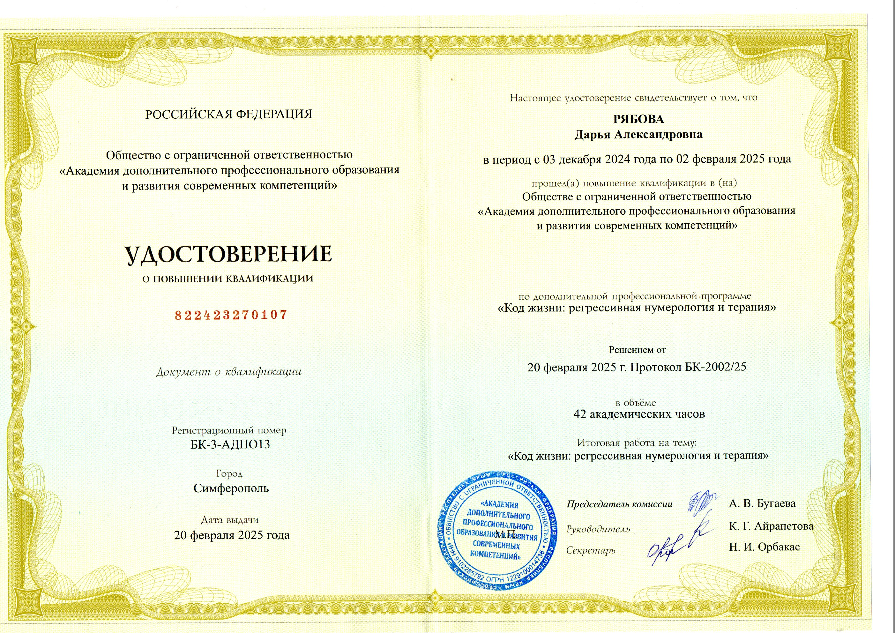
Выбери то, что откликается — или напиши, и я подскажу с чего начать
Не знаешь с чего начать — напиши просто «не знаю с чего начать». Я отвечу и скажу что сейчас актуальнее. Без давления. Это бесплатно.
Написать ДарьеЗаниженная самооценка, страх проявляться, внутреннее напряжение, сложности с деньгами, страх перемен. В процессе работы проявилась ещё одна важная тема: "Хочу вынуть маму из себя. Она как камень во мне".
Май 2025 — февраль 2026. Проведено 2 сессии регрессивной терапии. Изменения продолжались не только сразу после сессий, но и в течение нескольких последующих месяцев.
Путь от внутренней тяжести и постоянного напряжения — к спокойному и устойчивому состоянию. Вместо бесконечного поиска себя появилась внутренняя опора.
«Всё происходит без надрыва, легко и непринуждённо. Я научилась уверенно отстаивать свои границы и уважать границы других. Отпали вопросы — какое моё предназначение и где бы ещё поучиться. Я просто живу и радуюсь. В общем, я счастлива.»Клиентка · февраль 2026 · после 2 сессий регрессивной терапии
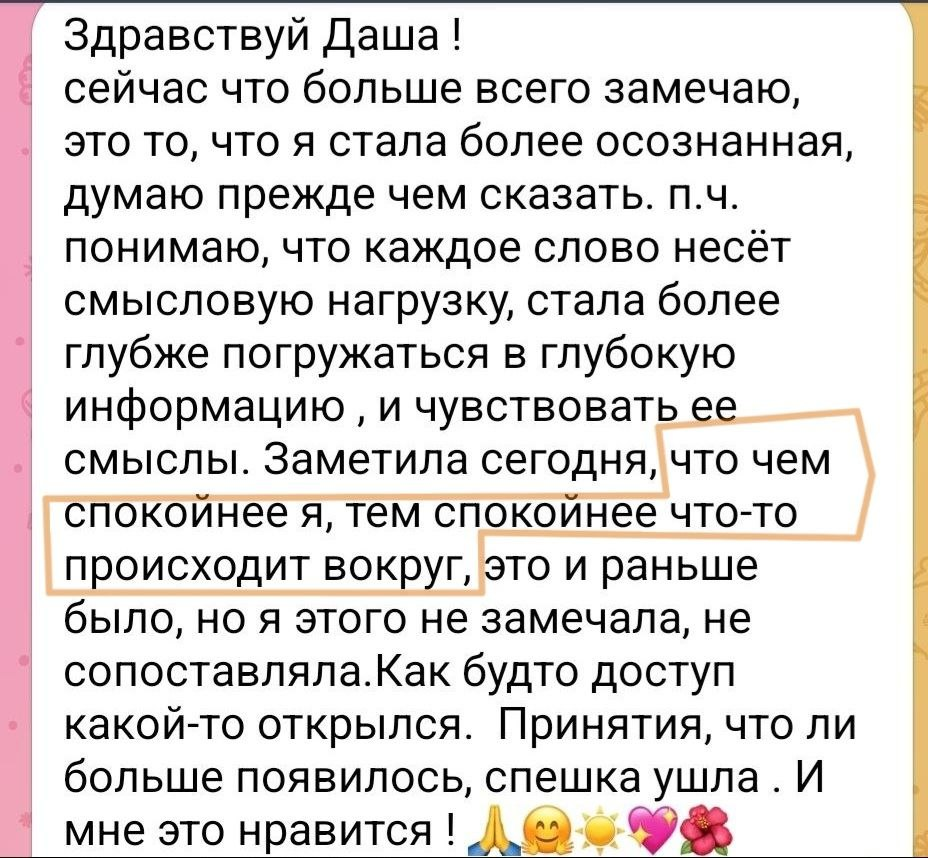
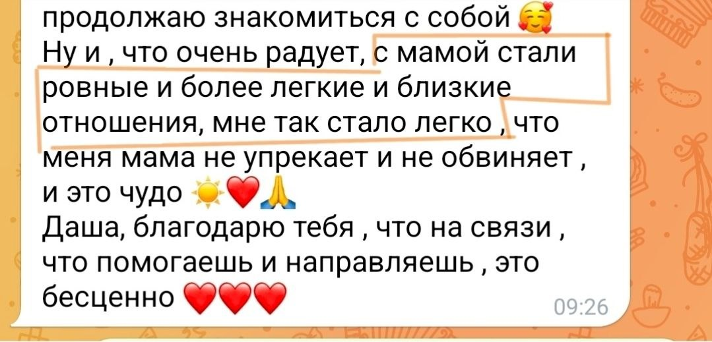
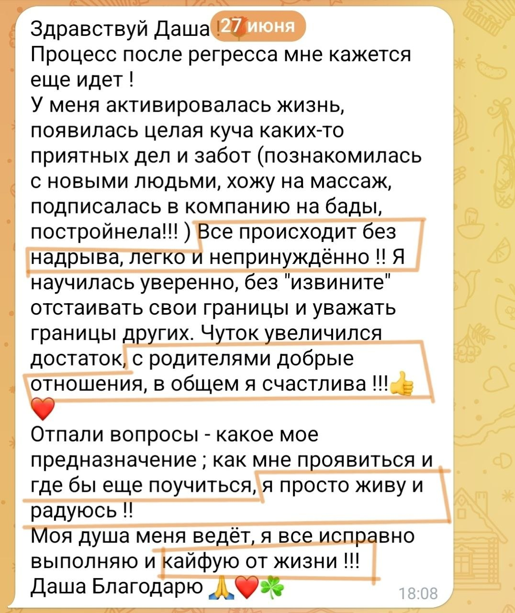
Не красивые слова — реальные скрины от реальных людей
Очень быстро погрузились в прошлую жизнь, стало понятно откуда всё это идёт. Во время очищения я даже чувствовала физическую боль в руках. После сессии прям стало легко. Страх ушёл, появилось больше уверенности в себе.
Сразу видно какие стороны и сферы у меня в минусе, какие в плюсе. Некоторые вещи проходят в несознанке, на автомате. Теперь есть напоминалочка — что делать, чтобы максимально быть в плюсе.
Очень удивил и порадовал уровень и качество сессии — я не первый раз в регрессе. У Дарьи приятный голос, она уверенно и качественно погрузила меня в нужное состояние.
Ко мне пришла уверенность в себе. Стала глубже мыслить. А тема папы отпустила — не помню когда. Я поняла что я — это Я с большой буквы.
Начали происходить изменения в моём сознании и поведении. Я смогла решить вопрос, который тянул меня за душу пару лет. Высказала своё мнение без страха — мне очень понравилось это ощущение!
Я не реагирую агрессией там, где раньше реагировала. Всё очень спокойно. Замечаю что когда в потоке — всё складывается под мои запросы. Состояние наполненное.
Реальные скрины из Telegram
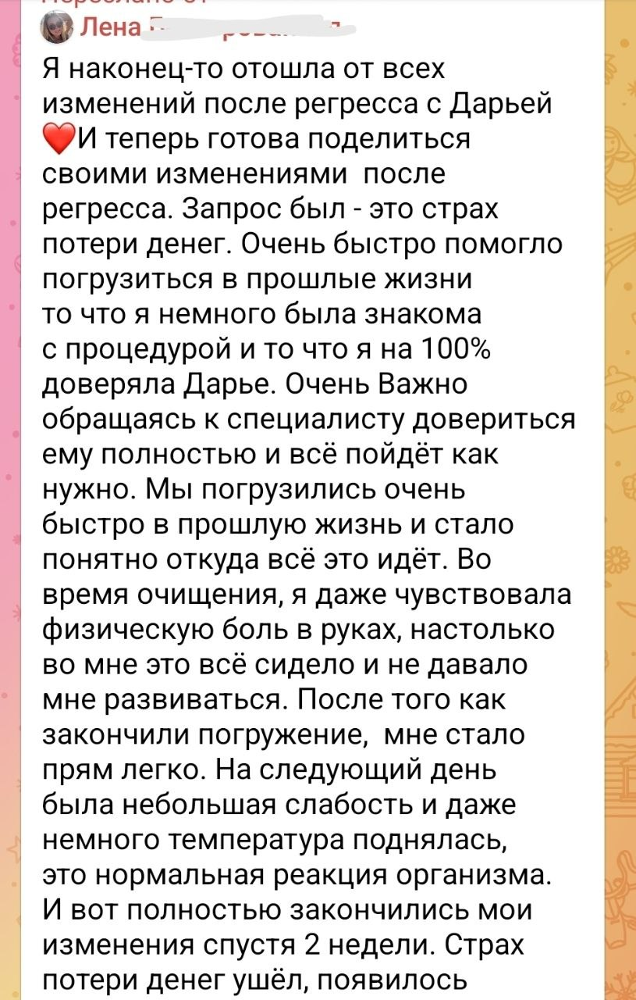
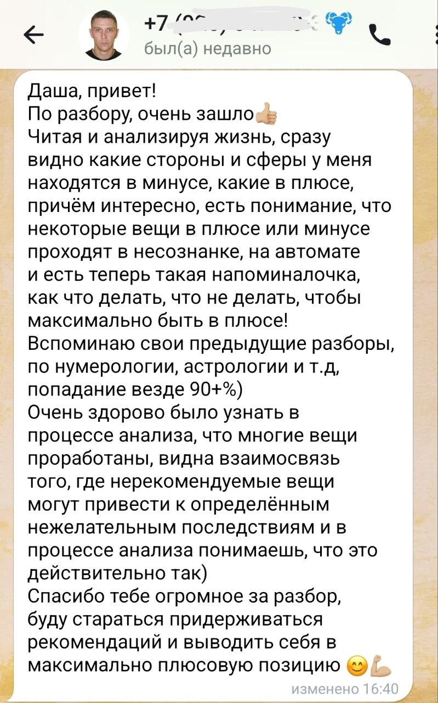
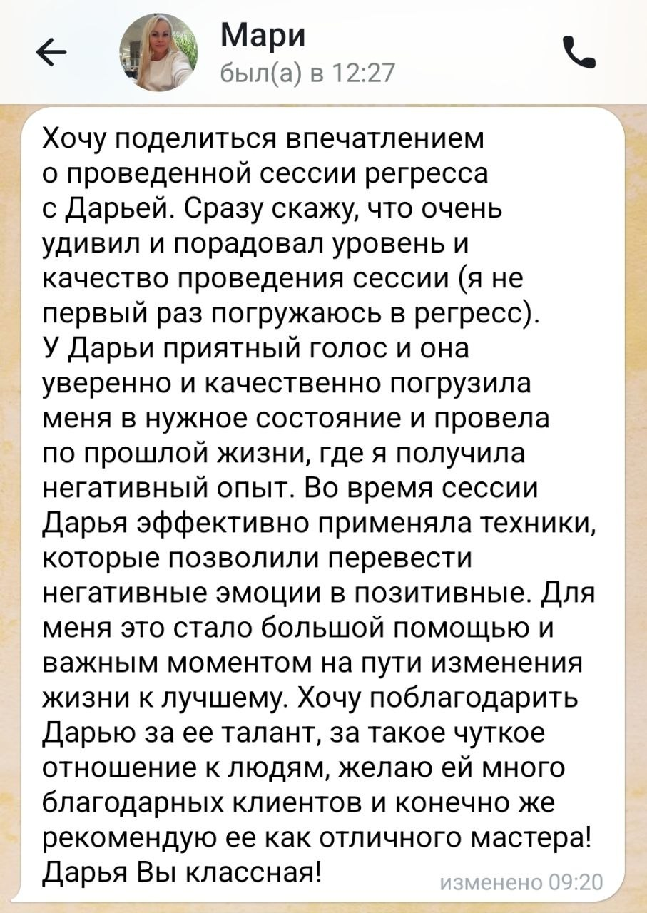
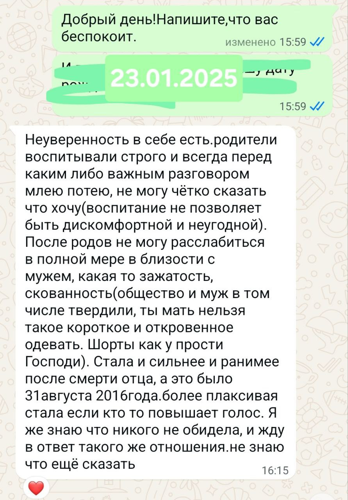
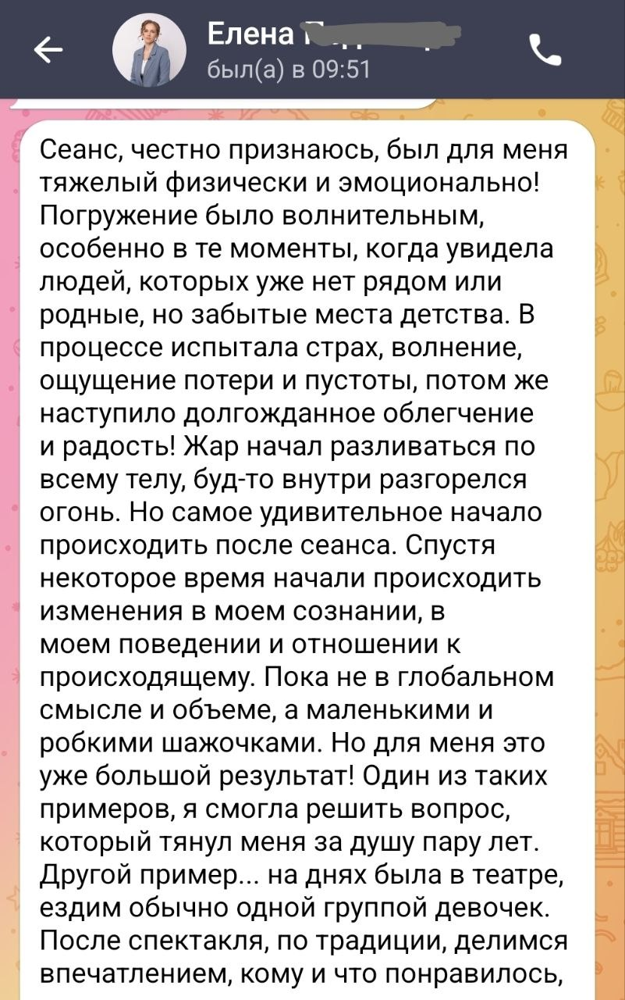
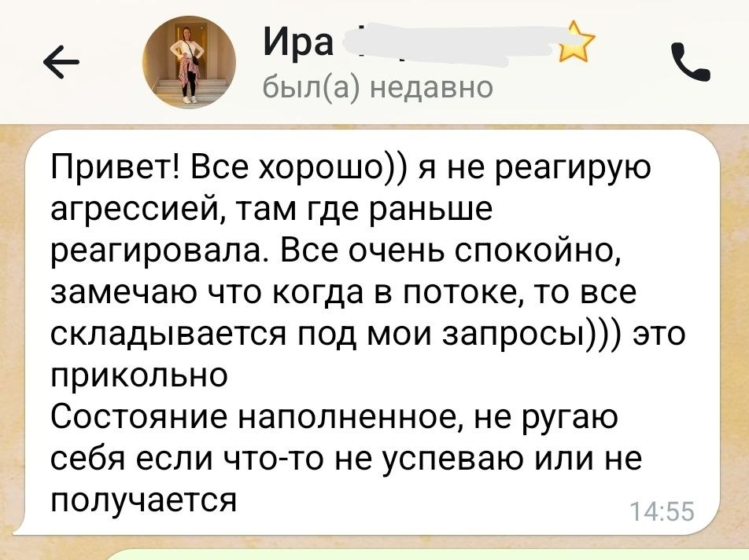
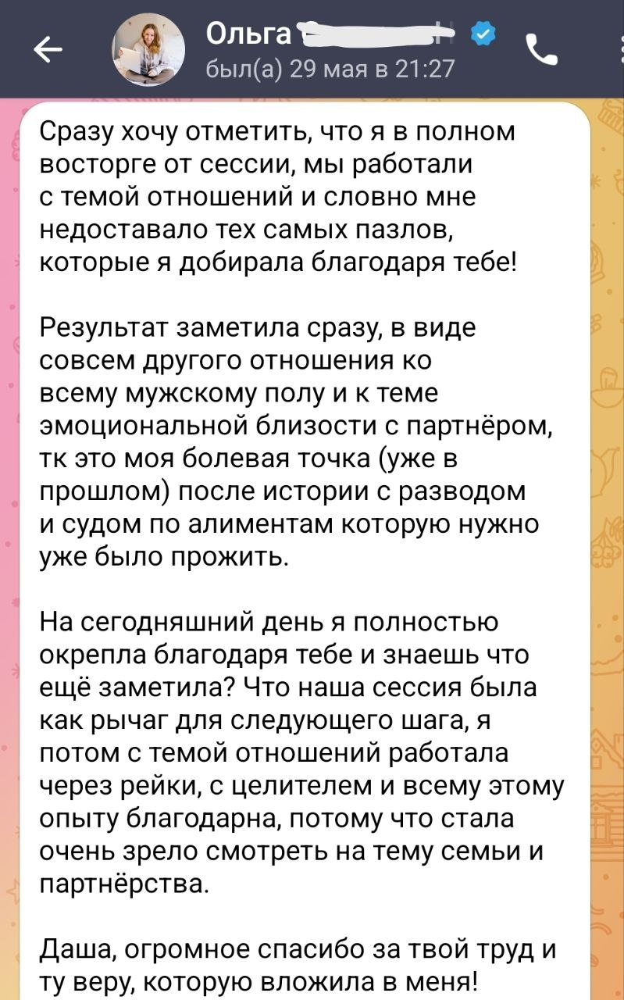
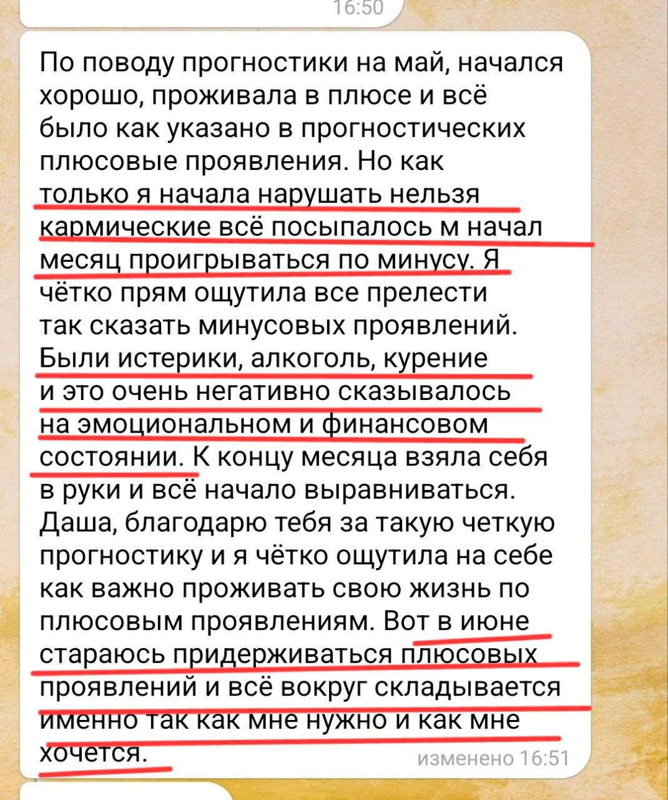
Это не истории про магию. Это истории про то, как человек наконец увидел себя — и сдвинулся с места, где застрял годами. Твоя история может быть следующей.
Написать Дарье в TelegramНумерология и регрессивная терапия — инструменты самопознания, не религиозная практика. Никаких ритуалов, привязок к верованиям или магических обещаний. Только твои цифры, твои образы и твоя работа с ними.
Нет. Нужно только желание разобраться в себе — и честность с собой. Скептики приходят и получают результат так же, как те, кто давно в теме.
Нумерологические разборы: ты присылаешь дату рождения — я готовлю развёрнутый PDF-документ, который остаётся у тебя навсегда. Регрессивная терапия: сессия в видеозвонке, один на один. Всё что нужно — тихое место и 1,5–2 часа времени.
Нет. Это мягкая работа с образами в расслабленном состоянии. Ты остаёшься в сознании, помнишь всё что происходит, можешь остановить процесс в любой момент. Я веду и держу пространство — ты смотришь и проживаешь.
Психика не выдаёт то, к чему человек не готов — и это нормально. Если образов нет, значит есть другой запрос или нужна подготовка. Я не оставлю тебя с пустотой — разберёмся вместе.
Цифры — это структура. Твоя дата рождения содержит карту личности, сценариев, ресурсов и блоков. Это не гороскоп и не предсказание. Это конкретный анализ — про тебя, не про всех Львов или Близнецов сразу.
Нет. Я работаю с прогностикой — это карта энергий твоего периода. Ты сама решаешь как их использовать. Я даю инструмент, не приговор.
Зависит от запроса. Один разбор даты даёт ясность уже при первом чтении. Регресс — одна сессия иногда даёт сдвиг там, где годами ничего не менялось. Я не создаю зависимость: даю инструменты и отпускаю.
Написать мне в Telegram — ссылка внизу страницы. Расскажи коротко что болит или что хочешь разобрать. Я отвечу и предложу подходящий формат.
Перед любой работой мы коротко общаемся — чтобы убедиться, что запрос и формат совпадают. Я не беру всех подряд. Если понимаю, что не смогу помочь — скажу честно и порекомендую куда обратиться.
Первый шаг — просто написать. Расскажи что болит или что хочешь разобрать. Я отвечу и предложу подходящий формат.